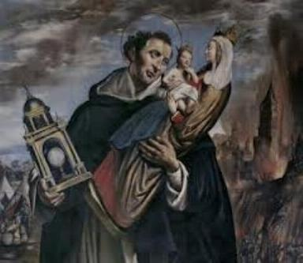

“FATOS
ADMIRÁVEIS”
O PRIMO DO SANTO
São Domingos tinha um primo
chamado Dom Pero, que levava uma vida dissoluta. O primo sabendo que o Santo
fazia pregações admiráveis, revelando as maravilhas
do SANTO ROSÁRIO,
e que muitas pessoas se convertiam e mudavam de vida, decidiu procurá-lo. Inclusive
chegou a dizer aos seus parentes:
“Verdadeiramente eu tinha perdido a esperança da minha salvação,
mas começo a ganhar coragem. Preciso ouvir este meu primo que é um homem de
DEUS”.
Um dia ele foi
a Santa Missa para assistir um sermão de São Domingos. Quando o Santo o viu no
banco da Igreja, reforçou as próprias palavras, fazendo-as mais pesadas e fervorosas
atacando os vícios cultivados pelas pessoas. E então, num gesto corajoso, rezou
forte a DEUS arrancando frases preciosas do fundo de seu coração, para abrir os
olhos do seu primo e inclusive de outros viciados que estivessem presentes, para
que eles conhecessem o estado miserável em que se encontrava a alma.
Dom Pero
ficou um pouco assustado, mas não resolveu a se converter. Mas as palavras de
Domingos balançaram o seu espírito e ele decidiu ir a Santa Missa outra vez, para
ouvi-lo. O Santo, homem inteligente e vivido, compreendeu que seu primo não ia
se converter se não acontecesse um fato marcante e extraordinário, por isso
gritou bem alto: “SENHOR
JESUS, faz ver a toda esta audiência o estado em que se encontra aquele que
acabou de entrar em VOSSA Casa”.
Todas as pessoas
que estavam dentro da Igreja viram Dom Pero rodeado de terríveis demônios em forma de
bestas que o tinham agrilhoado com correntes de ferro. Cada um ficou mais assustado e
começaram a querer fugir. São Domingos ordenou que eles se mantivessem onde
estavam, e disse a Dom Pero:
“Vede, desgraçado, o estado deplorável em que estais! Arrojai-vos aos pés da SANTÍSSIMA
VIRGEM e reze suplicando misericórdia”.
Deu-lhe um SANTO ROSÁRIO e disse: “Tomai
este SANTO ROSÁRIO, recitai-o com devoção e arrependimento de vossos pecados e fazei
intenção sincera de mudar de vida.”
Ele se apressou
e foi até o Altar de NOSSA SENHORA, ajoelhou e rezou o SANTO ROSÁRIO, enquanto São Domingos
celebrou a Santa Missa até o final.
Assim que o seu
primo terminou as orações, ele mesmo entrou na Sacristia e pediu a Domingos a Santa Confissão.
E fez com grande contrição e verdadeiramente arrependido dos seus muitos pecados. O
Santo ordenou-lhe como penitência que rezasse todos os dias o SANTO ROSÁRIO. Ele aceitou e
cumpriu prazerosamente. Inclusive, ele próprio, inscreveu o seu nome na
CONFRARIA DO ROSÁRIO.
O HEREGE ALBIGENSE
Pregando São
Domingos o SANTO ROSÁRIO próximo a cidade de Carcassone, na França, levaram-lhe um
homem herege albigense possuído por demônios. O Santo o exorcizou na presença de
muitas pessoas que assistiam a sua pregação, e admiradas, presenciavam a reação
dos demônios que não queriam responder as perguntas de Domingos. Mas o Santo
insistiu que os demônios respondessem e falassem por qual motivo estavam naquele
homem? E eles tiveram que falar: “Disseram que eram mais de 100, que estavam no corpo daquele
miserável que tinha atacado os Quinze Mistérios do SANTO ROSÁRIO; que pelo SANTO
ROSÁRIO que São Domingos pregava, causava terror e medo em todo inferno; que ele
era o homem do mundo que eles mais odiavam, principalmente por causa das almas
que ele lhes roubava, que não as deixava irem para o inferno porque lhes
ensinava a Devoção ao ROSÁRIO”.
Domingos tendo
colocado o seu SANTO ROSÁRIO no pescoço do possesso, perguntou
aos demônios:“Qual de todos
os SANTOS do Céu eles mais temiam e qual devia ser o mais amado e honrado por toda
humanidade?”
A esta pergunta eles
soltaram gritos tão horríveis e assustadores, que grande parte dos ouvintes, apavorados
e com medo, caíram ao chão. Domingos disse: “Estou esperando.”Os espíritos
malignos para não responder, choravam e lamentavam de maneira tão piedosa e tão tocante, que
até alguns assistentes choraram também, movidos por natural piedade. Os demônios
através da boca do possesso suplicaram ao Santo: “Domingos, Domingos, tem piedade de nós, prometemos
jamais te tocar ou te causar qualquer mal. Misericórdia, misericórdia”.
O Santo sem se deixar
tocar pelas palavras ternas daqueles desgraçados espíritos, respondeu-lhes que não
pararia de atormentá-los até que tivessem respondido a pergunta que ele fez. Os
demônios disseram que responderiam sim, mas em segredo e no ouvido, e não diante
da multidão. O Santo não aceitou e lhes ordenou respondesse bem alto, para que
todos ouvissem. Mas os demônios se encolheram e ficaram quietos. Nada disseram.
Domingos então se ajoelhou e fez uma oração a NOSSA SENHORA:
“Ó SANTÍSSIMA VIRGEM MARIA, pela
virtude do SANTO ROSÁRIO, ordena a estes inimigos do gênero humano que responda
à minha questão.”
Eis que neste momento,
uma chama ardente saiu das orelhas, das narinas e da boca do possesso, fazendo tremer a
todos. Então os demônios exclamaram:
“Domingos, rogamos-te pela Paixão de JESUS CRISTO e pelos méritos
da SUA SANTA MÃE e de todos os Santos, que nos permitais sair deste corpo sem
dizer mais nada; pois quando quiseres saber, os Anjos poderão lhe revelar. Não
nos atormente, tem piedade de nós.”
Respondeu Domingos:
“Desgraçados sois, indignos
de verdes vossos desejos satisfeitos”. E ainda de joelhos São Domingos disse a MÃE DE DEUS: “Ó digníssima MÃE DA SABEDORIA, rogo-VOS por este povo
aqui presente. Forçai os VOSSOS inimigos a confessar em público a verdade, que
eles insistem em esconder”.
Mal ele tinha acabado esta oração viu a SANTÍSSIMA VIRGEM MARIA junto dele, rodeada
por um grande número de Anjos, que com uma vara de ouro que traziam golpeavam os
endemoninhados dizendo-lhes:
“Respondei a Domingos conforme ele lhes perguntou”.
O povo não ouvia
e nem via a SANTÍSSIMA VIRGEM MARIA e nem os ANJOS, mas apenas viam e ouviam
Domingos e os demônios.
 Então os demônios
começaram a gritar, dizendo:
“Ó nossa Inimiga, ó nossa ruína, ó nossa confusão, porque viestes do Céu para nos
atormentar? É preciso que para nossa desgraça, ó Advogada dos pecadores que
livra todos do inferno, ó Caminho Seguro para o Paraíso, nós somos obrigados a
dizer toda a verdade? É preciso que confessemos diante de todo o mundo que és
toda Poderosa? Somos obrigados a confessar que esta MÃE de JESUS CRISTO tem
poder de impedir que seus servidores e devotos caíssem no inferno? Porque é ELA,
que como um Sol, dissipa as trevas das nossas maquinações e astúcias; é ELA que
descobre as nossas intrigas; é ELA que torna todas as nossas tentações inúteis e
sem efeito. Somos obrigados a dizer, que ninguém que persevere em SEU serviço
será condenado a viver no inferno. Nós A tememos mais que a todos os
bem-aventurados juntos e nada podemos contra os SEUS fieis servidores. Muitos
cristãos relaxados que deviam ser condenados, mas que se lembram DELA rezando
para ELA na última hora da morte, consegue a salvação por SUA intercessão. ELA
obtém para os SEUS devotos uma perfeita e verdadeira contrição dos pecados,
conseguindo o perdão e a indulgência para todos eles. Nós não gostamos DELA e A tememos”.
Então os demônios
começaram a gritar, dizendo:
“Ó nossa Inimiga, ó nossa ruína, ó nossa confusão, porque viestes do Céu para nos
atormentar? É preciso que para nossa desgraça, ó Advogada dos pecadores que
livra todos do inferno, ó Caminho Seguro para o Paraíso, nós somos obrigados a
dizer toda a verdade? É preciso que confessemos diante de todo o mundo que és
toda Poderosa? Somos obrigados a confessar que esta MÃE de JESUS CRISTO tem
poder de impedir que seus servidores e devotos caíssem no inferno? Porque é ELA,
que como um Sol, dissipa as trevas das nossas maquinações e astúcias; é ELA que
descobre as nossas intrigas; é ELA que torna todas as nossas tentações inúteis e
sem efeito. Somos obrigados a dizer, que ninguém que persevere em SEU serviço
será condenado a viver no inferno. Nós A tememos mais que a todos os
bem-aventurados juntos e nada podemos contra os SEUS fieis servidores. Muitos
cristãos relaxados que deviam ser condenados, mas que se lembram DELA rezando
para ELA na última hora da morte, consegue a salvação por SUA intercessão. ELA
obtém para os SEUS devotos uma perfeita e verdadeira contrição dos pecados,
conseguindo o perdão e a indulgência para todos eles. Nós não gostamos DELA e A tememos”.
Tendo os demônios
com voz forte e alta, respondido as perguntas de São Domingos, ele respeitosamente
abrasado de amor Divino, fez o povo rezar o SANTO ROSÁRIO, de modo muito lento e
devotamente. E por incrível que pareça, a cada AVE MARIA que o Santo e o povo
rezavam, acontecia uma coisa espantosa, saia do corpo do desgraçado herege, uma
multidão de demônios em forma de carvões ardentes. Tendo todos os demônios
saídos do herege, deixando-o totalmente libertado, a SANTÍSSIMA VIRGEM MARIA que
embora invisível ao povo, continuava presente na companhia dos Anjos, deu a SUA
Bênção a todos, deixando-os felizes e cheios de alegria, e regressou a
eternidade com SEUS Anjos. Por causa deste milagre, grande numero de hereges
converteram-se e ingressaram na CONFRARIA DO SANTO ROSÁRIO.
PACTO DE SANGUE
COM O DEMÔNIO
No ano de 1578, uma
mulher da cidade de Anvers na Belgica, entregou-se ao demônio por um contrato
assinado com o seu sangue. Mas algum tempo depois ela se arrependeu, e
naturalmente teve um grande desejo de reparar o mal que fizera, desfazendo
aquele louco contrato. Procurou um confessor prudente e caridoso para se
informar de como poderia se libertar do poder do diabo. Encontrou um Padre sábio
e devoto, que logo a aconselhou a procurar o Padre Henri, diretor da CONFRARIA
DO SANTO ROSÁRIO, do Convento de São Domingos, para que ele a inscrevesse na
Confraria e também a confessasse. Ela procurou o Padre, mas ao invés do Padre
Henri encontrou o diabo sob a forma de um religioso, que a repreendeu
severamente e lhe disse que ela não poderia esperar qualquer Graça de DEUS, e
nenhum meio para revogar o que ela tinha assinado. Este encontro e aquelas
palavras terríveis do demônio a deixou bastante nervosa. Mas não perdeu sua
esperança na misericórdia de DEUS, e voltou a procurar o Padre encontrando
novamente o diabo que a despachou como da vez anterior. Mas ela estava
verdadeiramente arrependida de ter feito aquele pacto com satanás e queria, por
isso mesmo, desmanchar aquele compromisso de qualquer maneira. E foi assim
pensando que voltou pela terceira vez ao Convento a procura do Padre Henri. E
desta vez, pela Vontade Divina, o encontrou. Ele a recebeu caridosamente e a
exortou a confiar na bondade de DEUS, fazendo uma boa Confissão. Depois a
recebeu na CONFRARIA e lhe ordenou que rezasse com frequência o SANTO ROSÁRIO. A
mulher passou a rezar o SANTO ROSÁRIO diariamente com devoção e confiança,
alegrando com certeza o SAGRADO CORAÇÃO DE JESUS e o IMACULADO CORAÇÃO DE MARIA.
Tempos depois, durante uma Santa Missa que o Padre Henri celebrava por intenção
dela, a SANTÍSSIMA VIRGEM MARIA forçou o diabo a devolver àquela mulher o
Contrato de Sangue, que ela mesma tinha assinado com o próprio sangue entregando
sua vida a satanás. E assim ela ficou plenamente libertada do
demônio pela
autoridade da MÃE DE DEUS e pela virtude do SANTO ROSÁRIO.
A MEDITAÇÃO
DOS MISTÉRIOS DO SANTO ROSÁRIO É UM GRANDE MEIO DE PERFEIÇÃO
Os Santos tinham
como o seu principal modelo e estudo, a VIDA DE NOSSO SENHOR JESUS CRISTO. Meditavam
sobre as SUAS Virtudes e sobre os SEUS Sofrimentos, e por este caminho, chegavam
à perfeição cristã. São Bernardo de Claraval começou por este exercício que nunca
abandonou. Disse ele:“Desde
o princípio da minha conversão, fiz um ramo de mirra lembrando as dores do MEU
SALVADOR; e coloquei esse ramo sobre o meu coração, pensando nas chicotadas, nos
espinhos e nos cravos da Paixão. Apliquei todo o meu espírito a meditar todos os
dias sobre esses Mistérios.”
Sofrimentos, e por este caminho, chegavam
à perfeição cristã. São Bernardo de Claraval começou por este exercício que nunca
abandonou. Disse ele:“Desde
o princípio da minha conversão, fiz um ramo de mirra lembrando as dores do MEU
SALVADOR; e coloquei esse ramo sobre o meu coração, pensando nas chicotadas, nos
espinhos e nos cravos da Paixão. Apliquei todo o meu espírito a meditar todos os
dias sobre esses Mistérios.”
Este foi também o
exercício dos Santos Mártires; e é espantosa a forma como eles triunfaram enfrentando
os mais cruéis tormentos. De onde poderia vir àquela admirável constância dos mártires,
diz São Bernardo: “Senão
das Chagas de JESUS CRISTO, sobre as quais eles faziam a mais frequente
meditação? Onde estava a alma desses generosos atletas, quando seu sangue corria
e seus corpos eram triturados pelos suplícios? Suas almas estavam nas Chagas de
JESUS CRISTO e as chagas do SENHOR os tornavam invencíveis”.
A SANTÍSSIMA MÃE DO
SALVADOR ocupou a SUA própria existência a meditar sobre as Virtudes e os Sofrimentos do SEU
FILHO. Quando ouviu os Anjos cantarem no Nascimento de JESUS musicas de alegria, quando
viu os pastores adorando-O no estábulo, SEU Espírito encheu-se de admiração e
meditava todas essas maravilhas. ELA comparava as grandezas do VERBO ENCARNADO
com os SEUS profundos abatimentos; pensava na palha do estábulo e no presépio,
com o SEU Trono e com o CORAÇÃO de SEU PAI; o Poder de DEUS, com a Delicadeza de uma
Criança; a SUA Sabedoria, com a SUA Simplicidade...
A SANTÍSSIMA VIRGEM
MARIA disse um dia a Santa Brígida: “Quando EU contemplava a Beleza, a Modéstia, a Sabedoria do MEU FILHO, um
sorriso se desenhava na minha face e a MINHA ALMA enchia-se de alegria; e quando
pensava em SUAS MÃOS e nos SEUS PÉS tão delicados e bonitos, que seriam
transpassados terrivelmente por cravos de ferro, EU vertia uma torrente de
lágrimas, e o MEU CORAÇÃO permanecia oprimido de tristeza e dor.”
Após a Ascensão de JESUS aos
Céus, a SANTÍSSIMA VIRGEM MARIA passou o resto da SUA Vida visitando lugares
onde o DIVINO SALVADOR tinha santificado com SUA presença e com os SEUS
tormentos. Ali, ELA meditava sobre a SUA Caridade Infinita e sobre os rigores
da SUA PAIXÃO.
A Bem-aventurada
Ângela de Foligno rezava e suplicava a NOSSO SENHOR que lhe dissesse, com qual
exercício ela mais O honraria. JESUS apareceu-lhe pregado à Cruz e lhe disse:
“Minha filha, contempla as MINHAS Chagas”.
.Assim, ela compreendeu que nada
é mais agradável a NOSSO SENHOR, que a Meditação dos SEUS Sofrimentos.
Esta realidade nos
traz presente, que todos os cristãos têm apenas uma Fé, adoram um só DEUS, conhecem
um único MEDIADOR que é JESUS CRISTO, e esperam alcançar uma imensa felicidade
nos Céus. Por isso mesmo, todos devem imitar o DIVINO Modelo, passando a
considerar com amor e atenção, os Mistérios da SUA Vida, das SUAS Virtudes e da
SUA Glória. A Meditação das Verdades da Fé e os Mistérios da Vida de JESUS
constituem dever e obrigação de todos. Isto porque, além de deixar presente em
nosso espírito o incomensurável AMOR de DEUS, proporciona uma frequente
lembrança da Vida, das Virtudes e dos Sofrimentos do SALVADOR, que estão
representados nos 15 Mistérios do SANTO ROSÁRIO.
Creia em mim estimados
irmãos, se pretendeis chegar a um alto grau de oração, sem qualquer afetação e sem cair
nas ilusões do demônio tão frequentes nas pessoas de oração, reze todos os dias
o SANTO ROSÁRIO, mas se não puderdes, reze pelo menos o SANTO TERÇO.
A SANTÍSSIMA VIRGEM
MARIA disse ao Bem-Aventurado Alano: “Assim como DEUS escolheu a Saudação Angélica para a Encarnação do SEU VERBO
e a Redenção da Humanidade, aqueles que desejam reformar os costumes da população e
regenerá-la em JESUS CRISTO, devem ME honrar e ME saudar com aquela mesma
Saudação. EU sou, acrescentou a VIRGEM MÃE, o caminho pelo qual DEUS veio à
humanidade. Por isso é preciso a humanidade crer na verdade, de que após JESUS,
alcançará e obterá as Graças e Virtudes por MINHA Intercessão, por que esta é a
Vontade de MEU FILHO, e esta é a Ordem do PAI ETERNO”.

 PRÓXIMA
PÁGINA
PRÓXIMA
PÁGINA
PÁGINA
ANTERIOR
RETORNA
AO ÍNDICE